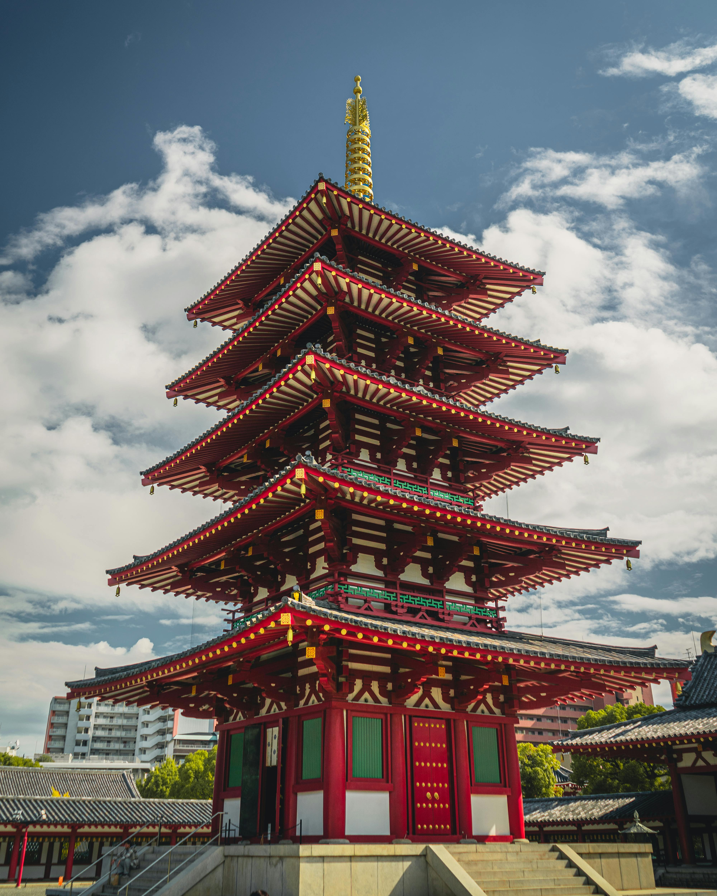
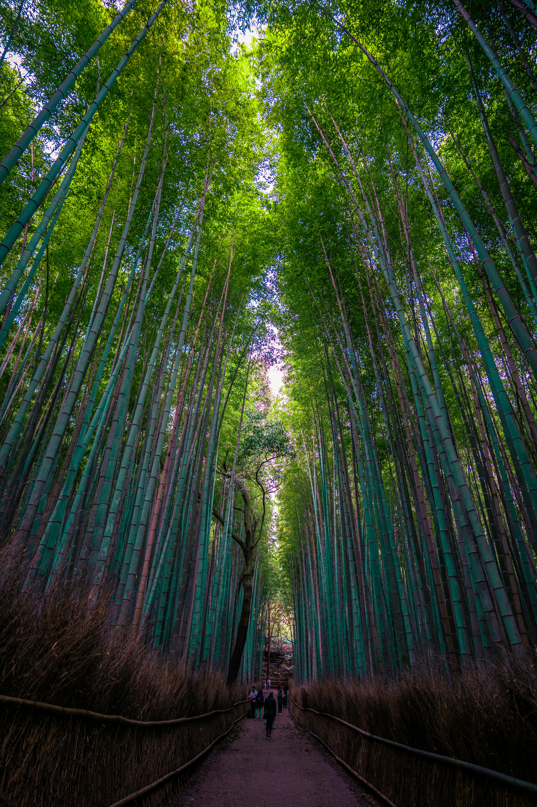
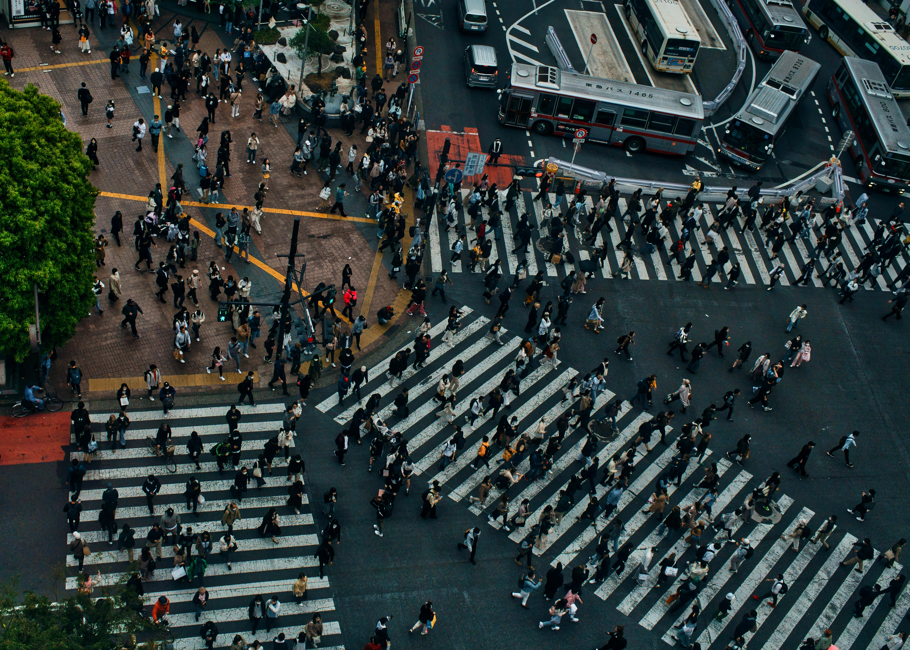
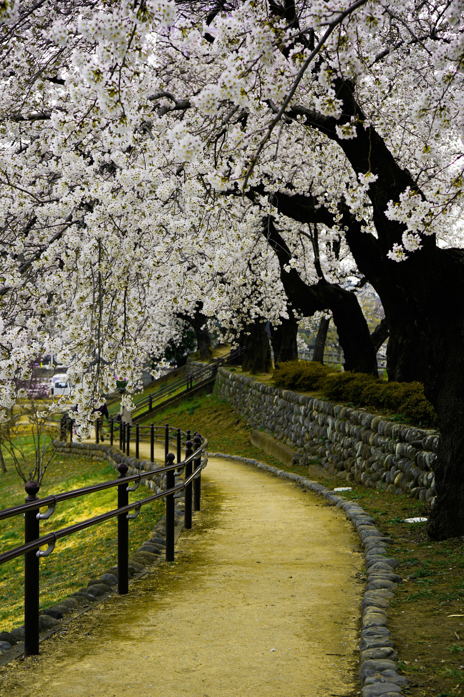
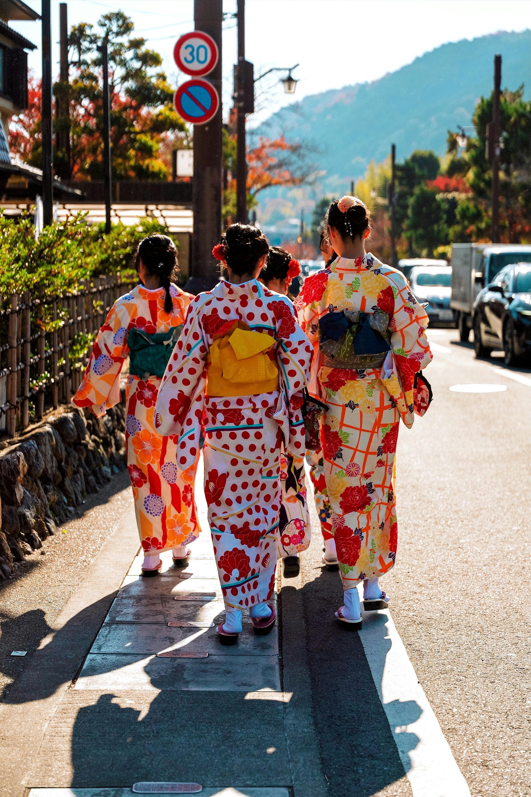
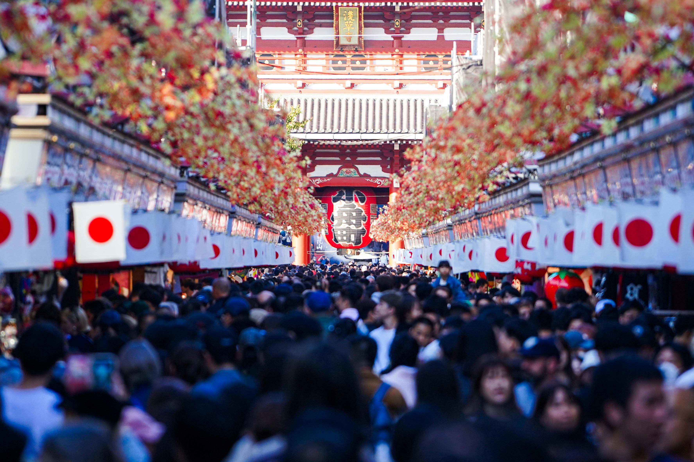

Beautiful Views of Japan







Explore Tokyo, Kyoto, Mount Fuji, cherry blossoms, temples, food, and culture.
Loading...
Tokyo: Around 18°C – 28°C depending on season
Japanese Yen (JPY)






Japan’s most famous mountain and a popular place for sightseeing and photography.
A modern city with shopping, technology, food, and entertainment.
Known for temples, traditional streets, gardens, and cultural experiences.
Famous for street food, nightlife, shopping, and Osaka Castle.